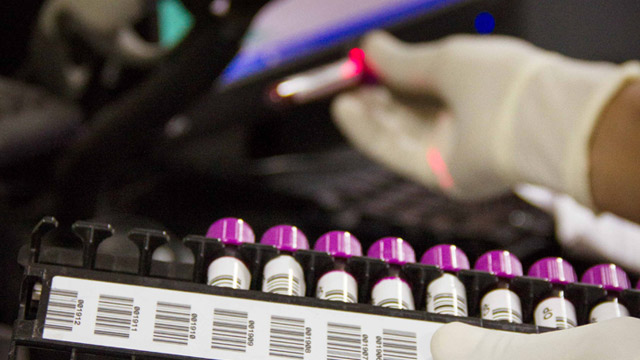
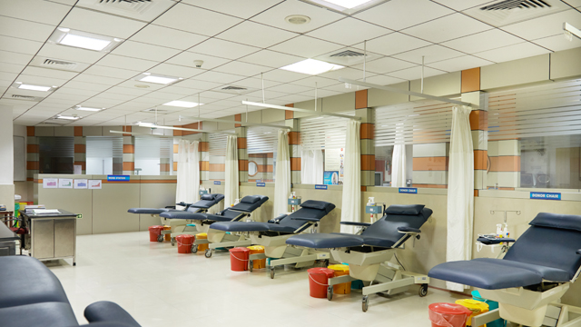
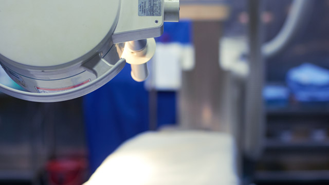
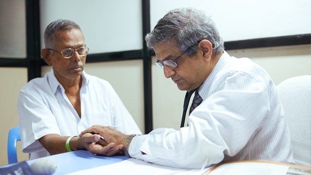

Open 24/7
For information, call
24765615, 45928655.
24765615, 45928655.
central Laboratories
view lab reports
view lab reports

World Class Treatment at Low Costs
For over a decade, International
Patients Facilitation Center has been
catering to the needs of patients
around the world..
Patients Facilitation Center has been
catering to the needs of patients
around the world..
more
Master Health Check Up
A routine health check-up helps
early diagnosis of health problems
which have become common in this
day of rising stress and less exercise.
early diagnosis of health problems
which have become common in this
day of rising stress and less exercise.
more
Liver Transplant
When standard medical and surgical
therapies have failed, there can be
hope still.
therapies have failed, there can be
hope still.
more

Kidney Transplant
Making a difference in people’s lives
since 1995 with over 600
transplants.
since 1995 with over 600
transplants.
more
Heart Transplant
People who receive a donor heart
can look forward to a full and
productive life.5.
can look forward to a full and
productive life.5.
more
Organ Transplant
We provide a unified, comprehensive
approach to transplant patient care
in each of our organ transplant
programs.
approach to transplant patient care
in each of our organ transplant
programs.
more

For Enquiries Contact
044 - 45928844, 45928855 (7 am to 8 pm)
& 044 - 45928500
& 044 - 45928500
Emergency Ambulance :
044 - 40012345, 044 - 24768402
Emergency :
044 - 45928564
044 - 40012345, 044 - 24768402
Emergency :
044 - 45928564